Arco di curva continua
Abbiamo dato già una definizione di curva come funzione vettoriale f: ℝ ⟶ ℝm; passiamo ora a precisare tale definizione, con alcune richieste di regolarità.
2.3.1 Definition. Let I ⊆ ℝ. Si dice arco di curva continua o cammino, in ℝm una funzione r: I ⟶ ℝn, (ovvero tale che le sue componenti siano funzioni continue). Se la variabile t si pensa come tempo, un arco di curva è la legge oraria di un punto mobile: assegna la traiettoria e il punto in cui si prova in ogni istante il punto mobile.
Il sostegno della curva è l'immagine della funzione, cioè l'insieme dei punti di ℝm percorsi dal punto mobile (ovvero, la linea geometrica, a prescindere dalla legge con cui è percorsa).
La curva si dice chiusa se r(a) = r(b) con I = [a,b] (il punto di partenza e di arrivo nel moto del punto mobile coincidono). □
Example 2.3.2 L'arco di ellisse
è un arco di curva continua, non chiusa. Se t variasse in [0,2π] avremmo una curva chiusa, il cui sostegno è l'intera ellisse.
Increasing the value of the parameter, t reveal the orientation of a curve or the direction of motion along it. The curve above has counterclockwise orientation. A curve with equal trace but different orientation can be obtained by the following parametrization
Example 2.3.3 The Folium of Descartes has cartesian equation
x3 + y3 = 3axy
To obtain the parametric equations we set y = xt. Then
It is clear that the loop is described as the parameter t varies from 0 to ∞ (because t = y /x = tan θ, where θ varies from 0 to π/2).
Example 2.3.4 The equations
with a,b > 0, describe the iperbole branch
from here the origin of the name hyperbolic functions, for Ch t, Sh t. The other branch (for x < 0) is given by
Esempio 2.3.5 Gli esmpi precedenti sono curve piane, cioè in ℝ2. Un esempio di curva in ℝ3 è l'elica cilindrica, già introdotta nel paragrafo 1.: